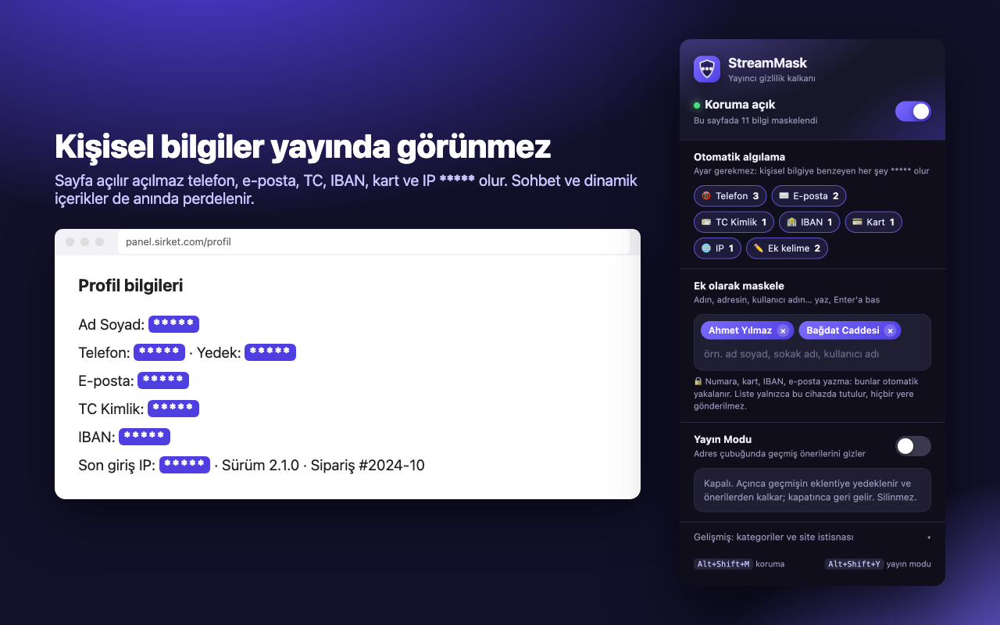

StreamMask
Hide Personal Info While Streaming
Yayıncılar için Chrome eklentisi: açık sayfadaki telefon, e-posta, TC kimlik, IBAN, kart ve IP bilgilerini otomatik olarak ***** yapar. Yayın Modu, adres çubuğundaki geçmiş önerilerini gizler; geçmiş silinmez, yayın bitince geri gelir.
- Ayar gerekmez: kişisel bilgiye benzeyen her şey anında maskelenir
- Adın, adresin, kullanıcı adın gibi ek kelimeler eklenebilir
- Hiçbir veri dışarı gönderilmez; ayarlar yalnızca cihazda tutulur
- Kısayollar: Alt+Shift+M koruma, Alt+Shift+Y Yayın Modu
